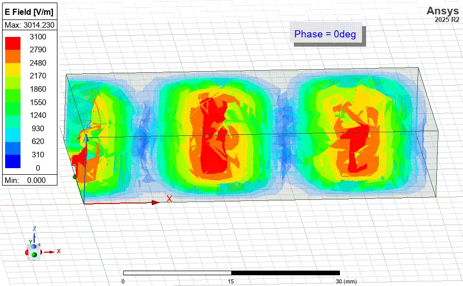
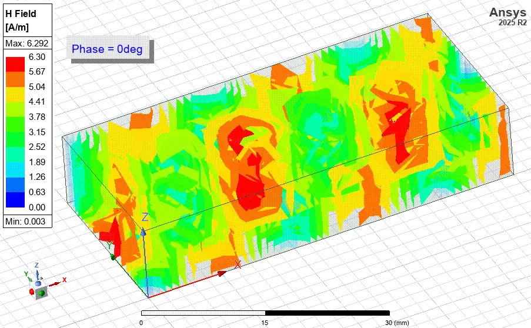
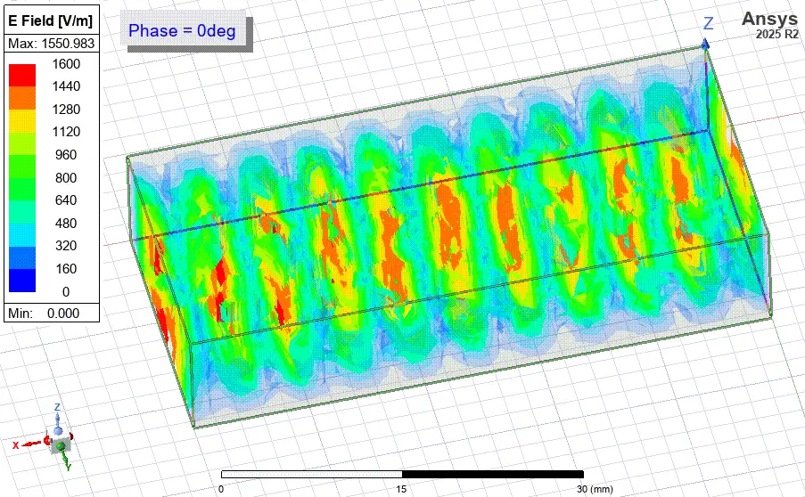
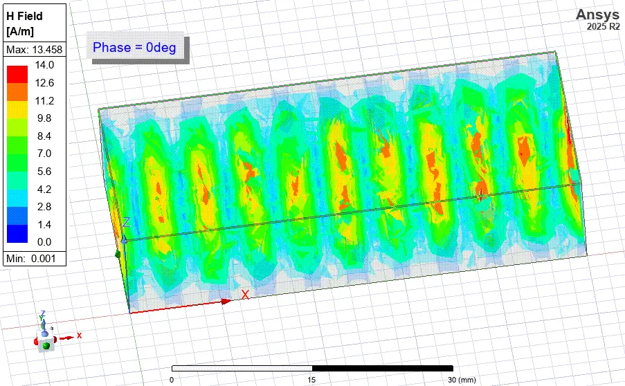

Analyse de la propagation du mode TE10 dans des guides d'ondes WR-90 remplis d'air et chargés d'alumine
Une étude HFSS compacte comparant la fréquence de coupure, la longueur d'onde guidée, le confinement du champ et les pertes d'insertion pour un guide standard rempli d'air par rapport à une configuration remplie d'alumine à 96 %.
Coupure dans l'air
6.56 GHz
Seuil de propagation de base du WR-90.
Coupure dans l'alumine
2.19 GHz
Le chargement diélectrique abaisse le seuil de fonctionnement.
Pertes mesurées
0.26-0.72 dB
Plage de pertes d'insertion due à la tangente de perte de l'alumine.
Date de réalisation du projet : 9 novembre 2025
Télécharger le rapport complet (PDF)Théorie des guides d'ondes
Le projet se concentre sur le mode dominant $TE_{10}$ dans un guide d'ondes rectangulaire WR-90. La comparaison isole une variable de conception : le remplacement du volume d'air par 96 % d'alumine pour étudier comment la permittivité relative modifie le comportement de propagation.
Domaine d'ingénierie
Ingénierie RF haute fréquence, théorie des micro-ondes, propagation dans les guides d'ondes et interprétation des champs électromagnétiques.
Analyse principale
Fréquence de coupure, longueur d'onde guidée, réponse des paramètres S, concentration du champ et atténuation diélectrique.
Logiciel utilisé
ANSYS Electronics Desktop avec HFSS pour la modélisation électromagnétique 3D et le post-traitement.
Configuration de la simulation HFSS
Objectif
Le but était de mener une comparaison quantitative de la propagation du mode $TE_{10}$ dans un guide d'ondes WR-90 standard et dans la même géométrie entièrement chargée d'alumine. La configuration HFSS évalue comment le chargement diélectrique modifie la fréquence de coupure, la longueur d'onde guidée, la concentration du champ et les pertes d'insertion.
Étapes du projet
- Modélisation des configurations WR-90 remplies d'air et d'alumine par rapport aux formules théoriques.
- Comparaison de la fréquence de coupure $TE_{10}$ à l'aide de relations analytiques et de la validation HFSS.
- Visualisation de la concentration des champs électrique (E) et magnétique (H) pour les deux matériaux.
- Comparaison de la longueur d'onde guidée à 10 GHz pour montrer l'impact du chargement diélectrique.
- Quantification des pertes d'insertion par post-traitement des paramètres S dans HFSS.
Résultats des champs et paramètres S
Décalage de coupure
Le chargement d'alumine réduit la fréquence de coupure de 6,56 GHz à 2,19 GHz, faisant en sorte que le même guide physique se comporte comme une structure basse fréquence.
Confinement du champ
La région à haute permittivité concentre les champs électriques et magnétiques, modifiant la distribution spatiale de l'énergie à l'intérieur du guide.
Compromis sur les pertes
Le cas de l'alumine introduit des pertes d'insertion mesurables, quantifiées entre environ 0,26 dB et 0,72 dB.
Galerie de simulation
Guide d'ondes rempli d'air
Ensemble de résultats de base utilisé pour valider le modèle WR-90 rempli d'air avant de comparer le guide chargé de diélectrique.




Guide d'ondes rempli d'alumine
Ensemble de résultats chargés de diélectrique montrant une fréquence de coupure plus basse, une plus forte concentration du champ et des pertes d'insertion mesurables.




Conclusion
La simulation confirme le compromis électromagnétique attendu : le chargement en alumine permet une fréquence de coupure beaucoup plus basse dans la même enveloppe WR-90, mais il augmente également la concentration du champ et introduit des pertes diélectriques.
- Fréquence de coupure : L'alumine a abaissé la fréquence de coupure de 6,56 GHz à 2,19 GHz.
- Confinement du champ : Les champs se sont davantage concentrés à l'intérieur du matériau à haute permittivité.
- Pertes d'insertion : L'atténuation diélectrique a été quantifiée entre environ 0,26 dB et 0,72 dB.
Travaux futurs
Une prochaine étape logique serait d'étudier un guide d'ondes partiellement rempli. La simulation d'une plaque diélectrique d'épaisseur variable permettrait d'identifier un compromis pratique entre miniaturisation, confinement du champ et pertes d'insertion.